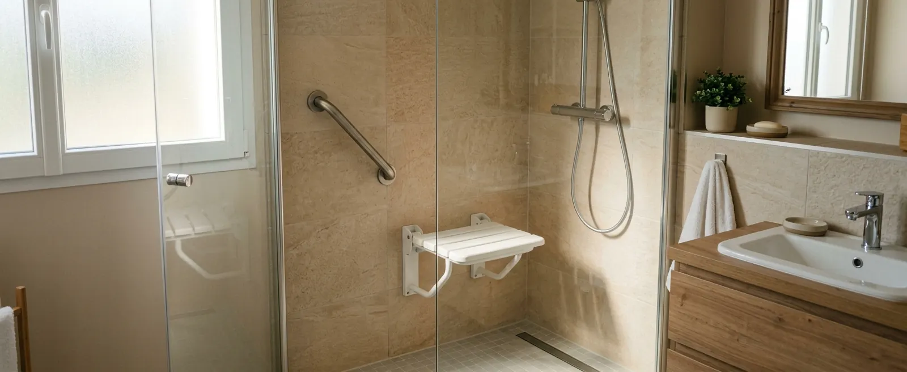

Remplacement baignoire par douche
La baignoire est déposée et remplacée par une douche accessible, le plus souvent dans le même emplacement.
Comparez les solutions de douche à accès facilité, les équipements disponibles, les coûts et les possibilités d’intervention près de chez vous.
« Douche senior » n’est pas un produit normalisé : c’est un terme d’usage qui désigne une douche pensée pour un accès et une utilisation plus simples. Selon les projets, elle peut combiner :

La baignoire est déposée et remplacée par une douche accessible, le plus souvent dans le même emplacement.
Un receveur de quelques centimètres seulement, qui réduit fortement la hauteur à enjamber.
Sans aucun seuil, au niveau du sol. Sa faisabilité dépend de l’évacuation et de la configuration de la pièce.
Siège intégré ou rabattable pour se doucher assis, associé à des barres d’appui.
Sans gros travaux : barres d’appui, siège, robinetterie et sol antidérapant sur la douche existante.
Réagencement de l’ensemble de la pièce pour une circulation et un usage facilités durablement.
C’est le projet le plus fréquent : la baignoire, difficile à enjamber, laisse place à une douche accessible installée dans l’emprise existante. Les travaux comprennent généralement la dépose de la baignoire, l’adaptation de la plomberie, la pose du receveur, l’habillage des murs (panneaux ou faïence), puis l’installation du siège, des barres d’appui et d’une paroi vitrée ou d’un rideau.
Réalisé par une équipe expérimentée, ce remplacement se fait souvent en quelques jours, sans refaire toute la salle de bain. Lire le guide complet du remplacement baignoire par douche →
Ces équipements réduisent les risques au quotidien, sans les supprimer totalement : l’implantation doit être pensée avec le professionnel selon vos habitudes. Voir le guide complet des équipements →
Ce qui fait varier le prix
L’état de la plomberie existante, la surface, le receveur et les parois choisis, les revêtements, le niveau d’équipement (siège, barres, robinetterie) et l’ampleur de la dépose.
Chaque salle de bain est différente : seul un devis après visite reflète le coût réel. Consulter le guide détaillé des prix →
Évaluation de la salle de bain
Configuration, plomberie, contraintes de la pièce.
Choix du projet et devis
Type de douche, équipements, matériaux et budget détaillés.
Dépose et préparation
Retrait de la baignoire ou de l’ancienne douche, adaptation de la plomberie.
Installation de la douche
Receveur, parois, siège, barres d’appui et robinetterie.
Finitions et remise
Étanchéité, revêtements, vérifications et prise en main avec vous.
La hauteur disponible dans le sol, la pente vers l’évacuation, l’état des supports, la ventilation et l’étanchéité déterminent la solution réalisable. En appartement, il faut aussi identifier les canalisations ou éléments communs susceptibles de nécessiter l’accord de la copropriété.
Go Senior vérifie si des professionnels indépendants prennent en charge l’adaptation de salle de bain dans votre secteur. Si c’est le cas, votre demande peut être transmise pour échanger sur votre projet et établir un devis personnalisé.
À titre indicatif, de 3 000 à 6 000 € pour une douche préfabriquée adaptée et de 4 000 à 9 000 € pour un remplacement de baignoire. Le coût réel dépend de votre salle de bain.
Oui, c’est le principe du remplacement dans l’emprise existante : la douche prend la place de la baignoire, sans toucher au reste de la pièce.
La douche PMR répond à des normes précises d’accessibilité (dimensions, accès fauteuil). La douche senior est une notion d’usage, plus souple, centrée sur le confort et la sécurité au quotidien.
Pas toujours : il faut pouvoir encastrer l’évacuation dans le sol. Quand ce n’est pas possible, un receveur extra-plat offre une alternative très proche.
Un remplacement de baignoire bien préparé se réalise souvent en quelques jours. Une salle de bain complète demande davantage. Le professionnel précise le calendrier dans le devis.
Les plus utiles : seuil bas, siège, barres d’appui, douchette accessible, mitigeur thermostatique et sol antidérapant. Le bon choix dépend de vos habitudes et de la pièce.
Le devis doit préciser la protection des parois et du sol, le raccord avec le receveur, le traitement des angles et les joints. Ces éléments comptent autant que les équipements visibles.
Il doit obtenir l’accord écrit du propriétaire lorsque les travaux modifient durablement le logement. Le périmètre, les matériaux et la remise en état éventuelle doivent être clarifiés avant de signer le devis.
Indiquez votre projet et votre code postal : si un professionnel indépendant intervient dans votre secteur, votre demande peut lui être transmise pour établir un devis personnalisé après visite.
Demande gratuite et sans engagement. La disponibilité dépend du projet et du secteur.